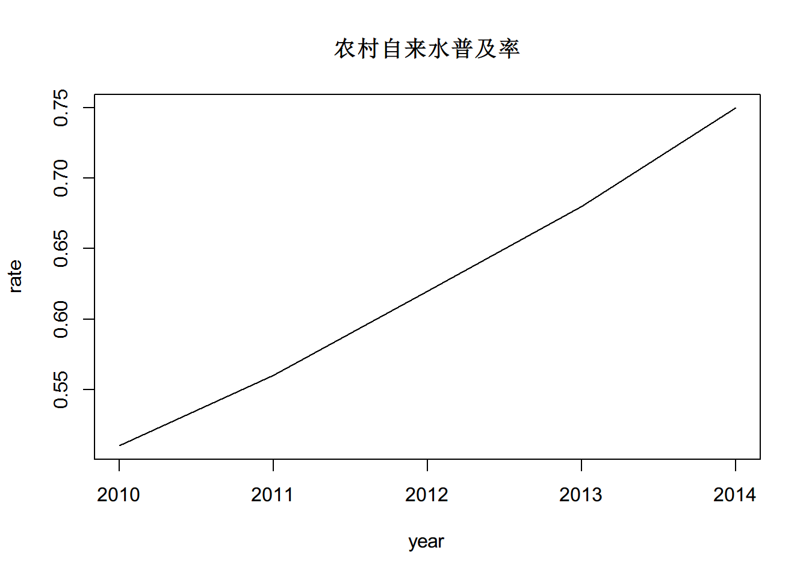
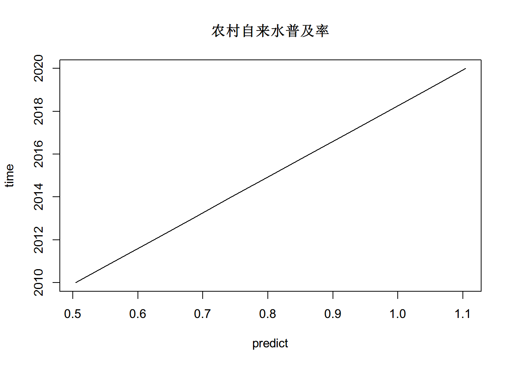
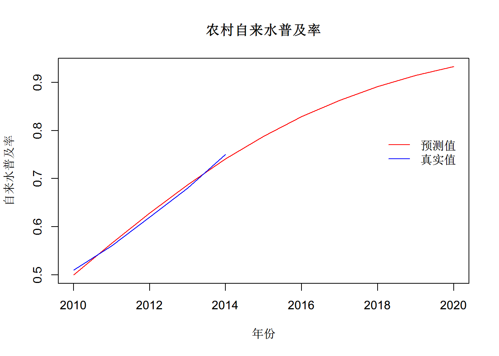

最近在帮岳峰做关于一个水利预测项目的课题，其中一套数据是关于农村自来水普及率的预测问题。数据如下：
| 指标 | 2010 | 2011 | 2012 | 2013 | 2014 |
|---|---|---|---|---|---|
| 农村自来水普及率 | 0.51 | 0.56 | 0.62 | 0.68 | 0.75 |
趋势图如下：
rate=c(0.51,0.56,0.62,0.68,0.75)
year=c(2010,2011,2012,2013,2014)
data=data.frame(rate,year)
plot(year,rate,type="l",main="农村自来水普及率")
从趋势图可以看出，随着年份的增加，普及率也随着增加，而且有明显的线性趋势，所以很容易想到利用线性模型进行预测，
rate=c(0.51,0.56,0.62,0.68,0.75)
year=c(2010,2011,2012,2013,2014)
model1=lm(rate~1+year)
summary(model1)#参数估计是否显著##
## Call:
## lm(formula = rate ~ 1 + year)
##
## Residuals:
## 1 2 3 4 5
## 0.006 -0.004 -0.004 -0.004 0.006
##
## Coefficients:
## Estimate Std. Error t value Pr(>|t|)
## (Intercept) -120.096 4.024 -29.84 8.26e-05 ***
## year 0.060 0.002 30.00 8.14e-05 ***
## ---
## Signif. codes: 0 '***' 0.001 '**' 0.01 '*' 0.05 '.' 0.1 ' ' 1
##
## Residual standard error: 0.006325 on 3 degrees of freedom
## Multiple R-squared: 0.9967, Adjusted R-squared: 0.9956
## F-statistic: 900 on 1 and 3 DF, p-value: 8.135e-05time=seq(from=2010,to=2020)
predict=model1$coefficients[1]+model1$coefficients[2]*time
plot(predict,time,type="l",main="农村自来水普及率")
从图中可以看出2020年的预测值已经超过了100%，不符合实际情况。根据普及率不能超过100%这一特点，很容易想到利用logistics回归模型进行预测，因为其回归曲线是“S”型。
Logistic回归是一种广义线性回归，其模型定义如下：
考虑具有\(p\)个独立变量的向量\(x^{'}=(x_{1},x_{2},\dots,x_{p})\)，设条件概率\(P(Y=1|x)=p\)为某事件发生的概率。 logistic回归的响应变量是分类变量，那么不能直接和连续型自变量产生联系，那么就需要一个连接函数\(g(x)\)将\(Y\)映射成连续型变量和\(X\)联系在一起，那么逻辑回归模型形式为： \[ p=P(Y=1|x)=\dfrac{e^{g(x)}}{1+e^{g(x)}},g(x)=\beta_{0}+\beta_{1}x_{1}+\cdots+\beta_{p}x_{p} \], 经过logistic变换可得， \[ \log(\dfrac{p}{1-p})=\beta_{0}+\beta_{1}x_{1}+\cdots+\beta_{p}x_{p} \], 在上述例子中，不妨假设 \[ Y=\left\{ \begin{align} & 1, 饮用自来水人群\\ & 0, 饮用其他水源人群\\ \end{align} \right. \]，则有\(p=P(Y(t=2010)=1)=0.51\)，根据计算可得未来6年内农村自来水普及率。
rate=c(0.51,0.56,0.62,0.68,0.75)
year=c(2010,2011,2012,2013,2014)
y=log(rate/(1-rate))
model1=lm(y~1+year)
summary(model1)#参数估计是否显著##
## Call:
## lm(formula = y ~ 1 + year)
##
## Residuals:
## 1 2 3 4 5
## 0.04135 -0.02048 -0.03507 -0.03383 0.04803
##
## Coefficients:
## Estimate Std. Error t value Pr(>|t|)
## (Intercept) -528.59590 30.31442 -17.44 0.000411 ***
## year 0.26298 0.01507 17.45 0.000410 ***
## ---
## Signif. codes: 0 '***' 0.001 '**' 0.01 '*' 0.05 '.' 0.1 ' ' 1
##
## Residual standard error: 0.04765 on 3 degrees of freedom
## Multiple R-squared: 0.9902, Adjusted R-squared: 0.987
## F-statistic: 304.7 on 1 and 3 DF, p-value: 0.0004099time=seq(from=2010,to=2020)
predict=model1$coefficients[1]+model1$coefficients[2]*time
predicty=exp(predict)/(1+exp(predict))
predicty## [1] 0.4996638 0.5650388 0.6282274 0.6873163 0.7408872 0.7881094 0.8287153
## [8] 0.8628933 0.8911473 0.9141581 0.9326721plot(time,predicty,type="l",main="农村自来水普及率",xlab = "年份", ylab="自来水普及率",col="red")
lines(year,rate,col = "blue")
legend(2018,0.8,c("预测值","真实值"),lty=1,bty="n",col=c("red","blue"))